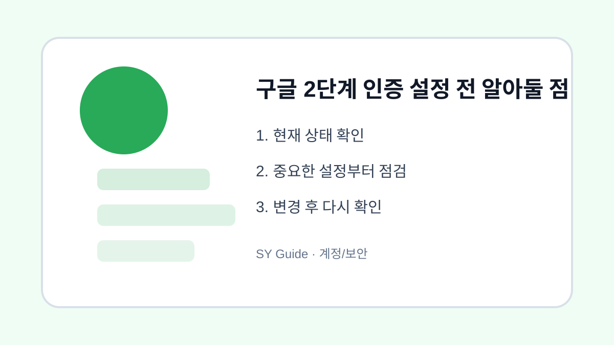

구글 2단계 인증 설정 전 알아둘 점
구글 계정을 더 안전하게 쓰기 위해 2단계 인증을 켜기 전 준비해야 할 항목을 정리합니다.

2단계 인증은 비밀번호가 노출되었을 때 계정을 보호하는 중요한 장치입니다. 하지만 아무 준비 없이 켰다가 휴대폰을 잃어버리면 로그인에 어려움을 겪을 수 있습니다. 보안을 높이면서도 계정을 잃지 않으려면 복구 수단을 먼저 정리해야 합니다.
복구 전화번호와 이메일 확인
2단계 인증을 켜기 전 Google 계정의 복구 전화번호와 복구 이메일이 현재 사용하는 정보인지 확인합니다. 오래된 번호나 접근할 수 없는 이메일이 남아 있으면 문제가 생겼을 때 본인 확인이 어려울 수 있습니다.
인증 방식 비교하기
| 방식 | 장점 | 주의할 점 |
|---|---|---|
| Google 메시지 | 간편함 | 휴대폰 필요 |
| 인증 앱 | 문자보다 안정적 | 기기 변경 시 이전 필요 |
| 백업 코드 | 비상용 | 안전한 곳에 보관 |
| 보안 키 | 보안성 높음 | 별도 장치 필요 |
공식 안내 확인
설정 경로와 지원 방식은 바뀔 수 있으므로 Google 계정 2단계 인증 공식 도움말을 함께 확인하는 것이 좋습니다. 검색 광고 링크보다 공식 도움말에서 시작하면 안전합니다.
계정과 개인정보를 지키는 최종 점검
- 복구 전화번호와 이메일 최신화하기
- 백업 코드를 저장하고 종이로도 보관하기
- 인증 앱을 쓴다면 기기 변경 방법 알아두기
- 가족 공용 기기에서는 계정 분리하기
- 설정 후 다른 기기에서 로그인 테스트하기
2단계 인증은 귀찮은 설정이 아니라 계정을 지키는 안전벨트에 가깝습니다. 다만 복구 수단까지 함께 준비해야 진짜로 안전하고 편하게 사용할 수 있습니다.
구글 2단계 인증 실제 상황 예시
구글 2단계 인증 관련 문제는 대부분 한 가지 메뉴만으로 해결되지 않습니다. 알림, 권한, 저장공간, 계정 상태처럼 여러 설정이 연결되어 있기 때문에 현재 상태를 먼저 확인하고 하나씩 바꾸는 방식이 안전합니다. 이렇게 하면 어떤 변경이 실제로 효과가 있었는지도 파악하기 쉽습니다.
구글 2단계 인증에서 피해야 할 실수
실수는 대개 급하게 처리할 때 생깁니다. 저장공간이 부족하다고 바로 삭제하거나, 보안이 걱정된다고 모든 권한을 꺼버리면 필요한 기능까지 멈출 수 있습니다. 변경 전후를 비교하고, 중요한 자료나 계정은 공식 도움말을 확인한 뒤 진행하는 것이 좋습니다.
구글 2단계 인증 관련 설정을 먼저 확인해야 하는 이유
구글 2단계 인증 관련 설정은 단순히 메뉴 하나를 켜고 끄는 문제가 아니라, 실제 사용 흐름에서 어떤 불편을 줄이려는지 먼저 정해야 합니다. 같은 메뉴라도 기기 제조사, 운영체제 버전, 앱 업데이트 상태에 따라 이름이 달라질 수 있으므로 현재 화면을 기준으로 차근차근 확인하는 것이 좋습니다.
구글 2단계 인증에서 자주 생기는 실수
많은 사용자가 바로 삭제하거나 초기화하는 방식으로 문제를 해결하려 하지만, 그 전에 현재 상태를 기록해 두면 되돌리기가 쉽습니다. 알림, 권한, 저장공간, 로그인 상태처럼 서로 연결된 항목은 하나씩 바꾼 뒤 실제로 원하는 결과가 나오는지 확인해야 합니다.
구글 2단계 인증 점검 후 다시 볼 부분
가족 기기나 업무용 계정에서는 본인에게는 사소한 변경도 다른 사람에게 큰 불편이 될 수 있습니다. 변경 전 백업 여부를 확인하고, 중요한 계정이나 자료가 관련되어 있다면 공식 도움말을 함께 보면서 진행하는 편이 안전합니다.